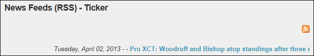
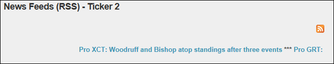
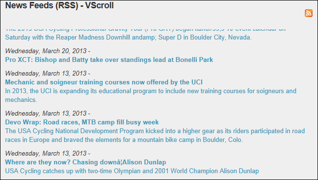
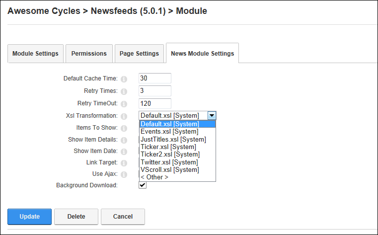

Setting News Layout
How to change the layout of news items in a News Feeds (RSS) module by changing the XSL Transformation file applied to the module.
-
- Select the News Module Settings tab.
- At Xsl Transformation, select a XSL transformation from these options:
- Default.xsl [System]: News items display in a static list down the module.

- Ticker.xsl [System]: News items display in a single line that repeatedly scrolls from left to right across the module. Item details are Date and Time, and Title.

- Ticker2.xsl [System]: News items display in a single line that repeatedly scrolls from left to right across the module. Item details are Date and Time, and Title.

- Twitter.xsl [System]: Suitable for feeds from Twitter. News items display in a static list down the module. Item details are Date and Time, Title and summary.

- VScroll.xsl [System]: News items display in a list which repeatedly scrolls up from the base to the top of the module.

- < Other >: Select this option to set a link to a custom XSL transformation. The link can be set to a URL (See "Setting a URL Link"); to a file on your site (See "Setting a File Link"); or you can upload an .XSL file if you have the required permissions (See "Uploading and Linking to a File").
-
Click the Update button.

Setting the layout of news feeds using an XSL transformation